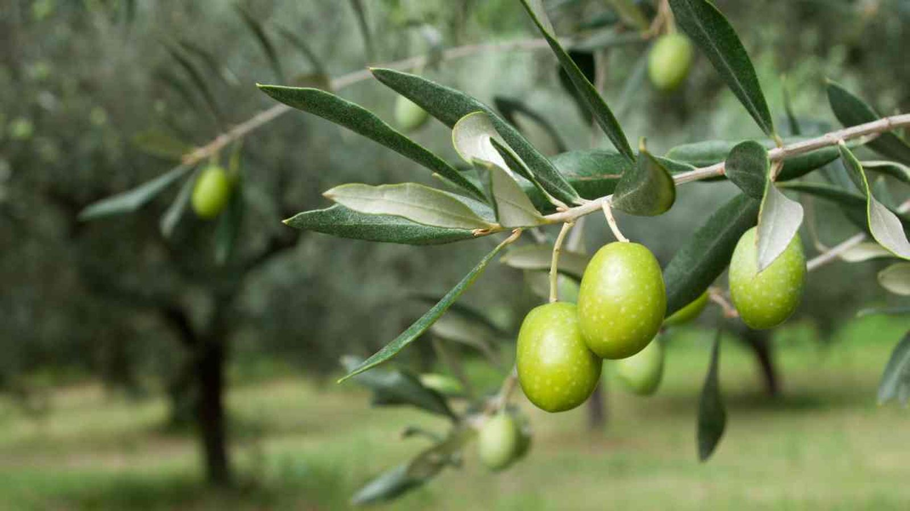

Ayuntamiento de Senés
JARDIN BOTANICO DE ESPECIES AUTOCTONAS DE SENES

Olea europaea

El olivo (Olea europaea) es un árbol perennifolio emblemático de la cultura mediterránea, estrechamente ligado a la historia, la economía y el paisaje rural. Se caracteriza por su gran longevidad y su capacidad de adaptación a condiciones de sequía.
Presenta un tronco grueso y retorcido, con corteza agrietada, y una copa amplia formada por ramas irregulares. Sus hojas son estrechas, alargadas y de color verde grisáceo, con el envés plateado. Produce como fruto la aceituna, base de la elaboración del aceite de oliva.
El olivo es originario de la región mediterránea, donde se cultiva desde la antigüedad. Prefiere climas cálidos y suelos bien drenados.
En el entorno de Senés, es un cultivo tradicional muy extendido, formando parte del paisaje agrícola y cultural.
El aceite de oliva es uno de los pilares de la dieta mediterránea, rico en grasas saludables y antioxidantes. Tiene beneficios para el sistema cardiovascular y la salud en general.
Además, las hojas del olivo han sido utilizadas en medicina tradicional por sus propiedades antioxidantes y reguladoras.
El olivo simboliza la paz, la sabiduría y la prosperidad. Es uno de los símbolos más antiguos y universales del mundo mediterráneo.
También representa la continuidad y la conexión con la tradición.
En Senés, el olivo ha sido un cultivo fundamental, utilizado para la producción de aceite y aceitunas.
Su cultivo ha formado parte de la economía y la vida cotidiana durante generaciones.
El olivo florece en primavera, mientras que la recolección de la aceituna se realiza en otoño e invierno.
El olivo puede vivir cientos e incluso miles de años, siendo uno de los árboles más longevos.
Es considerado un símbolo universal de la cultura mediterránea y de la paz.